적절한 골프 그립

--------------------------------------------------------------------------------------------------------------
골프클럽 잡는 방법-왼손
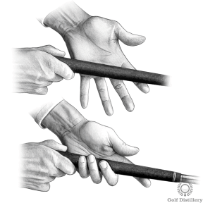
클럽을 왼손 손가락에 위치시킵니다. 클럽의 그립은 검지 가운데에서 새끼손가락 끝까지 이어져야 합니다 .
--------------------------------------------------------------------------------------------------------------
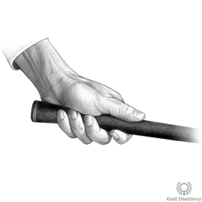
클럽을 끝에서 0.5인치 정도 잡아라. 마지막에 그립을 잡는 것과 비교하면 힘의 손실 없이 클럽 컨트롤과 볼 타격 능력이 향상됩니다.
--------------------------------------------------------------------------------------------------------------
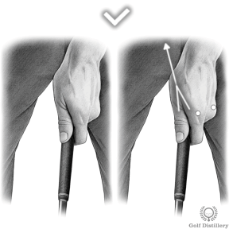
왼손을 내려다보면 2½개의 관절이 보여야 합니다. 이는 중립 위치로 분류됩니다. 왼쪽 엄지손가락과 집게손가락으로 만든 'V'가 오른쪽 어깨를 가리켜야 합니다.
--------------------------------------------------------------------------------------------------------------
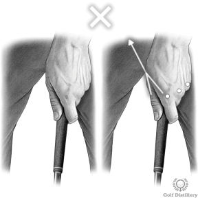
관절이 2 개 반 이상 보이면 왼손이 너무 강한 위치에 있는 것입니다.
--------------------------------------------------------------------------------------------------------------
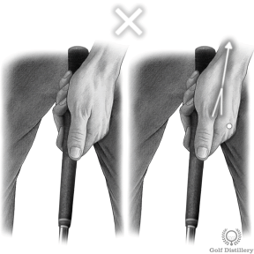
관절이 2 ½개 미만으로 보이면 왼손이 너무 약한 위치에 있는 것입니다.
--------------------------------------------------------------------------------------------------------------
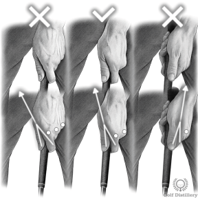
--------------------------------------------------------------------------------------------------------------
골프클럽 잡는 방법 – 오른손
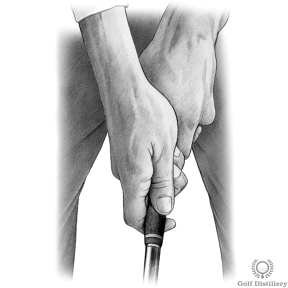
오른쪽 엄지손가락의 두꺼운 패드를 왼쪽 엄지손가락 바로 위에 놓습니다.
--------------------------------------------------------------------------------------------------------------
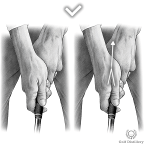
오른쪽 엄지손가락과 집게손가락 사이의 'V'가 턱을 가리켜야 합니다.
--------------------------------------------------------------------------------------------------------------
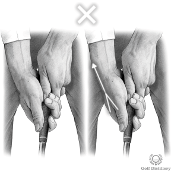
'V'가 오른쪽 어깨 위를 가리키면 오른손이 너무 강한 위치에 있는 것입니다.
--------------------------------------------------------------------------------------------------------------
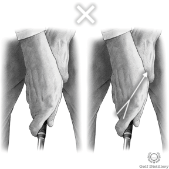
'V'가 왼쪽 어깨 위를 가리키면 오른손이 너무 약한 위치에 있는 것입니다.
--------------------------------------------------------------------------------------------------------------
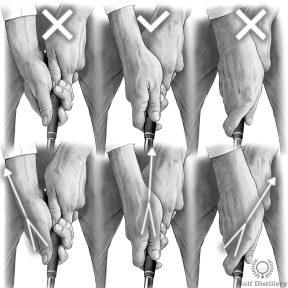
--------------------------------------------------------------------------------------------------------------
골프 그립의 종류
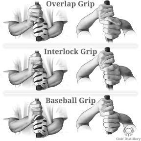
오른손의 손가락은 클럽을 잡고 3가지 다른 방법으로 왼손과 연결할 수 있습니다. 즉, 인터링크 그립 , 오버래핑 또는 'Vardon' 그립, 야구 그립이라고 합니다.
--------------------------------------------------------------------------------------------------------------
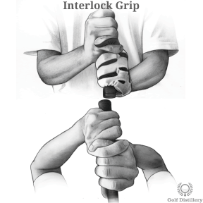
인터링크 그립을 주로 여성과 후배들이 사용한다는 것은 아마추어 골퍼들 사이에서 흔한 오해입니다. 잭 니클라우스와 타이거 우즈는 모두 인터링크 그립을 사용합니다.
--------------------------------------------------------------------------------------------------------------
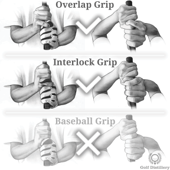
서로 연결되거나 겹치는 그립 중 더 편한 그립을 사용하는 것이 좋습니다.
--------------------------------------------------------------------------------------------------------------
그립 압력 – 골프 클럽을 얼마나 세게 쥐어야 할까?
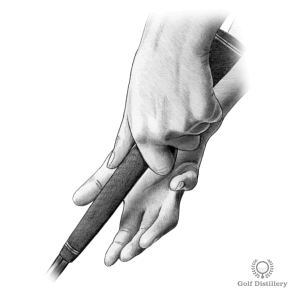
클럽을 꽉 쥐면 몸에 긴장이 생겨 좋은 스윙을 할 수 없게 된다는 말을 자주 듣게 됩니다. 하지만 임팩트 순간에 강한 압력으로 클럽을 잡는 것이 스트라이크를 더 잘 제어하는 데 도움이 됩니다.
1부터 10까지의 척도에서 레벨 10은 클럽을 최대한 단단히 잡는 것과 같다고 상상해 보십시오. 레벨 1은 클럽을 너무 느슨하게 잡아서 손에만 머물게 하는 것과 같습니다.
--------------------------------------------------------------------------------------------------------------
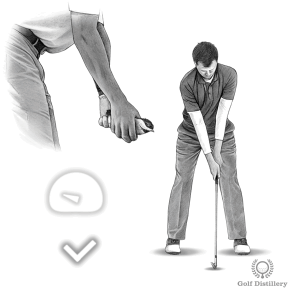
어드레스 시에는 10점 중 4점의 그립 압력으로 클럽을 잡습니다.
임팩트 시 그립 압력은 10점 만점에 9점 또는 10점까지 증가해야 합니다. 임팩트 시 의식적으로 클럽을 더 꽉 쥐고 이것이 볼 타격에 어떤 영향을 미치는지 확인하는 것이 좋습니다.
--------------------------------------------------------------------------------------------------------------